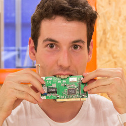
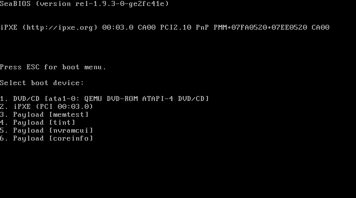
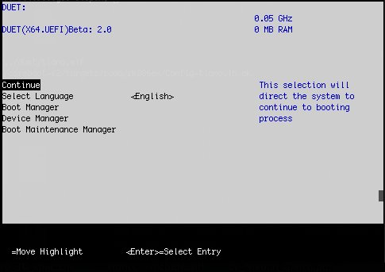
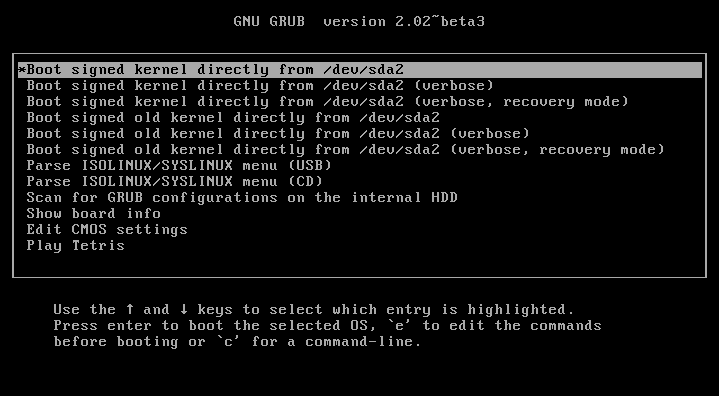
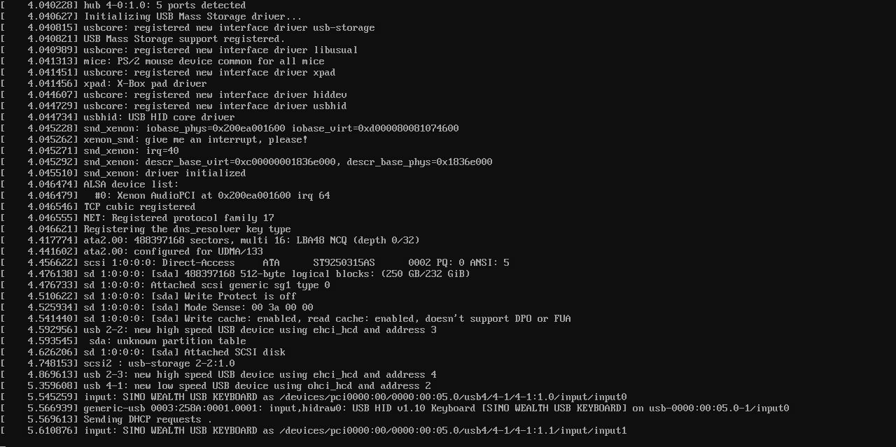
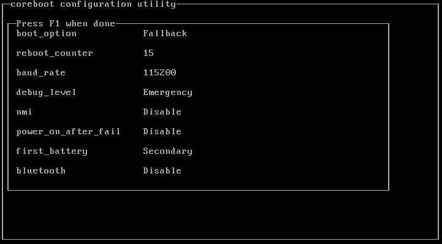
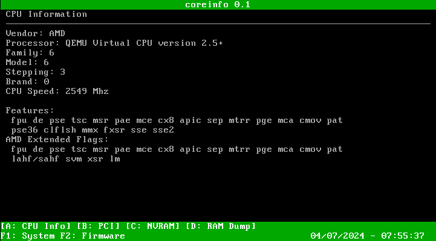
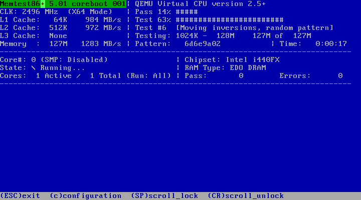
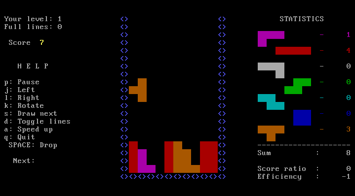
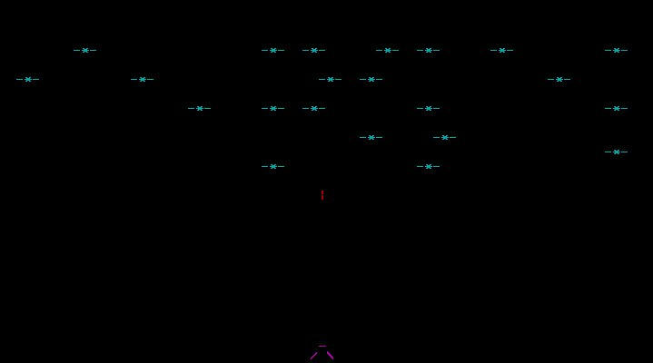

<!doctype html>
<html lang="en">

  <head>
    <meta charset="utf-8">

    <title>Coreboot POuL Workshop</title>

    <meta name="description" content="Coreboot POuL Workshop">
    <meta name="author" content="Nicola Corna">

    <meta name="apple-mobile-web-app-capable" content="yes" />
    <meta name="apple-mobile-web-app-status-bar-style" content="black-translucent" />

    <meta name="viewport" content="width=device-width, initial-scale=1.0, maximum-scale=1.0, user-scalable=no, minimal-ui">

    <link rel="stylesheet" href="reveal.js/css/reveal.css">
    <link rel="stylesheet" href="reveal.js/css/theme/night.css" id="theme">
    <link href='https://fonts.googleapis.com/css?family=Montserrat' rel='stylesheet' type='text/css'>

    <!-- Printing and PDF exports -->
    <script>
      var link = document.createElement( 'link' );
      link.rel = 'stylesheet';
      link.type = 'text/css';
      link.href = window.location.search.match( /print-pdf/gi ) ? 'reveal.js/css/print/pdf.css' : 'reveal.js/css/print/paper.css';
      document.getElementsByTagName( 'head' )[0].appendChild( link );
    </script>

    <!--[if lt IE 9]>
    <script src="reveal.js/lib/js/html5shiv.js"></script>
    <![endif]-->

    <!-- For syntax highlighting -->
	<link rel="stylesheet" href="reveal.js/highlight.js/src/styles/solarized-light.css" id="highlight-theme">
  </head>

  <style type="text/css">
  .reveal pre code {
    color: #3f3f3f;
    background: #eee none repeat scroll 0% 0%;
    font-size: 0.7em;
    line-height: 1.3em;
    border-radius: .2em;
  }
  body {
    background: #ffffff;
    background-color: #ffffff;
  }
  .reveal {
    color: #000000;
  }
  .reveal h1,
  .reveal h2,
  .reveal h3,
  .reveal h4,
  .reveal h5,
  .reveal h6 {
    color: #000000;
  }
  .reveal a {
    color: #444444;
  }
  .reveal section img {
    background: none;
    border: none;   
  }
  </style>

  <body>
    <div class="reveal">
      <section data-state="orange">
      <!-- Any section element inside of this container is displayed as a slide -->
      <div class="slides">
        <!-- Slides are separated by newline + three dashes + newline, vertical slides identical but two dashes -->
			<section data-markdown data-separator="^\n---\n$"
			         data-separator-vertical="^\n--\n$">
				<script type="text/template">


13 Dicembre 2016<br>
Politecnico Open unix Labs

---

<div style="float:left; width:50%">


<h3><b>Nicola Corna</b></h3>
<h4> [**nicola@corna.info**](mailto:nicola@corna.info) </h4>
<h4> [**github.com/corna**](https://github.com/corna)</h4>
</div>


<div style="float:right; width:50%">


<h3><b>Federico Izzo</b></h3>
<h4> [**federico.izzo42@gmail.com**](mailto:federico.izzo42@gmail.com) </h4>
<h4> [**github.com/Nimayer**](https://github.com/Nimayer)</h4>
</div>

---

# Indice

 * <a href="#/5">**Coreboot**</a>
  - <a href="#/6">**Cos'è?**</a>
  - <a href="#/7">**Come si installa?**</a>
 * <a href="#/8">**Intel ME**</a>

---

# Coreboot: cos'è?

--

Coreboot è un progetto volto a sostituire il firmware presente nella maggior
parte dei computer.

Potremmo dire che Coreboot è un'implementazione di un BIOS libero, ma non
sarebbe completamente vero.

--

## Perchè Coreboot non è propriamente un BIOS

 * Un BIOS inizializza l'hardware e fornisce delle chiamate al sistema in esecuzione<!-- .element: class="fragment" -->
 * Coreboot inizializza solamente l'hardware<!-- .element: class="fragment" -->
  - Coreboot + SeaBIOS è un BIOS completo<!-- .element: class="fragment" -->

--

## Vantaggi

 * FOSS software<!-- .element: class="fragment" -->
  - Sicuro<!-- .element: class="fragment" -->
  - "Hackable"<!-- .element: class="fragment" -->
  - Libero da backdoor nel BIOS<!-- .element: class="fragment" -->
 * Molto veloce (0.5/1 s per iniziare a caricare il kernel Linux)<!-- .element: class="fragment" -->
 * Scritto quasi completamente in C<!-- .element: class="fragment" -->
 * Sviluppato <!-- .element: class="fragment" -->secondo la filosofia "_facciamo il minimo indispensabile, poi togliamoci dai piedi_"

--

## Svantaggi

 * Supportato da pochi computer<!-- .element: class="fragment" -->
 * Difficile da compilare<!-- .element: class="fragment" -->
 * Difficile da installare<!-- .element: class="fragment" -->
 * Sviluppo e installazione sempre più difficili con le nuove generazioni di processori<!-- .element: class="fragment" -->
  - Intel Boot Guard<!-- .element: class="fragment" -->

--

## Funzionamento

Coreboot è suddiviso in quattro fasi principali:
 * Bootblock
 * Romstage
 * Ramstage
 * Payload

--

## Bootblock

In questa primissima fase Coreboot:
 * Legge il contenuto della CMOS<!-- .element: class="fragment" -->
 * Decide quale modalità eseguire successivamente<!-- .element: class="fragment" --> (_Normal_ o _Fallback_)

--

## Romstage

Questa è la fase più critica, in cui Coreboot inizializza la RAM e Intel ME.
 * Inizializza le periferiche per il debugging<!-- .element: class="fragment" -->
 * Legge le proprietà del chipset<!-- .element: class="fragment" -->
 * Legge le configurazioni delle RAM dall'SPD o dall'XMP<!-- .element: class="fragment" -->
 * Decide la configurazione migliore e la applica<!-- .element: class="fragment" -->
 * Controlla se la RAM funziona<!-- .element: class="fragment" -->
 * Alloca la memoria richiesta da Intel ME<!-- .element: class="fragment" -->

--

## Ramstage

In questa fase coreboot inizializza il resto delle periferiche ed esegue il
codice del payload.
Coreboot ha terminato il suo scopo ed esce di scena: fino allo
spegnimento/sospensione non sarà più eseguito codice di Coreboot.

--

## Payload

L'hardware è ora inizializzato ed è giunto il momento che un altro software
continui con l'avvio del computer.
I payload più interessanti sono:
 * SeaBIOS
 * Tianocore (UEFI)
 * GRUB
 * Linux

--

Ci sono poi anche dei payload "secondari" che possono essere lanciati dal menu
interattivo di SeaBIOS o GRUB:
 * nvramcui
 * coreinfo
 * Memtest86+
 * Tint
 * GRUB invaders

---

## SeaBIOS



--

Un classico BIOS x86.

Coreboot + SeaBIOS è la soluzione standard, che permette di avere un BIOS
"standard".

---

## Tianocore



--

Tianocore è la *reference implementation* di UEFI di Intel, rilasciata sotto
licenze open.

Duet è uno dei progetti di Tianocore, che permette di avere UEFI con coreboot
(se riuscite a farlo funzionare, io non ci riesco).

Tianocore può anche includere SeaBIOS come CSM, in modo da avere un sistema
UEFI + BIOS.

---

## GRUB



--

GRUB non ha bisogno di presentazione, sapete già cos'è.

La cosa che non sapete è che GRUB può essere direttamente lanciato da Coreboot
senza un BIOS. Questo grazie al fatto che Linux non usa le chiamate BIOS legacy.

--

Rispetto a SeaBIOS abbiamo alcuni vantaggi:
 * Velocità<!-- .element: class="fragment" -->
 * Crypto integrata<!-- .element: class="fragment" -->
  - Aprire volumi LUKS<!-- .element: class="fragment" -->
  - Verificare kernel/initramfs firmati<!-- .element: class="fragment" -->
 * Sicurezza<!-- .element: class="fragment" -->

---

## Linux



--

Coreboot può lanciare direttamente un kernel linux + initramfs.

IMO, non particolarmente utile: ad ogni aggiornamento del
kernel/initramfs/opzioni del kernel è necessario riflashare.

Inoltre se sbagliate qualcosa e Linux non si avvia, non ci sono molte opzioni
disponibili se non riflashare Coreboot con un programmatore esterno.

---

## nvramcui



Un'utility per cambiare la configurazione CMOS.

--

## coreinfo



Un'utility per vedere varie informazioni di sistema.

--

## Memtest86+



Un software per controllare lo stato della propria RAM.

--

## TinT (Tint is not Tetris)



TETRIS!!!

--

## GRUB invaders



Space invaders!!!

---

# Coreboot: come si installa?

--

## Le fasi dell'installazione sono:
- Preparare l'ambiente di compilazione
- Fare un dump della BIOS originale
- Compilare coreboot
- Flashare l'immagine di coreboot

--

## L'ambiente di compilazione
[qui](https://www.coreboot.org/Build_HOWTO) ci sono le istruzioni ufficiali,
ma seguono un ordine discutibile

### Quello che dovrete fare sará:
- Clonare il repository di coreboot
```
$ git clone http://review.coreboot.org/p/coreboot
$ cd coreboot
$ git submodule update --init --checkout
```
- Compilare il *cross-compilatore*, coreboot per ora gira a 32bit
```
make crossgcc-i386 CPUS=4
```
- Scegliere le opzioni di compilazione
```
make menuconfig
```

--

## Provatelo con QEMU!
### É possibile provare coreboot+payload su QEMU prima di passare all'hardware
Aprite `make menuconfig`

e controllate che nel menu *Mainboard* sia selezionato:
- vendor: Emulation
- model: QEMU x86 q35/ich9

Uscite dal menuconfig e usate `make -j4` per compilare

Dovreste trovare un file `coreboot.rom` nella sottocartella `build`


---

# Intel ME

--

Intel ME è un coprocessore integrato in tutti i processori Intel moderni che
costituisce l'hardware principale per Intel AMT (Advanced Management
Technology), una serie di servizi non opzionali:
 * (elenco servizi inutili)

--

Intel ME ha accesso a:
 * Tutta la memoria (DMA)
 * Il bus PCI
 * Alla GPU
 * Rete cablata e wireless (con MAC e IP separati)

--

Il firmware (ovviamente un blob non-free) per Intel ME è contenuto nel chip del
BIOS, ed è firmato con chiave RSA Intel.

Molti dei moduli sono inoltre compressi tramite Huffman, con dizionario
contenuto in hardware, quindi il loro codice non è accessibile.

--

# Come lo rimuovo?

--

Prima di Nehalem era possibile rimuovere completamente il firmware di ME e il
PC si avviava correttamente.

Da Nehalem in poi se non viene fornito alcun firmware il PC si accende
correttamente, ma dopo 30 minuti (controllati tramite timer interno) ME spegne
forzatamente il PC (probabilmente come misura di sicurezza per evitare il bypass
di Intel Antitheft).

--

## Risultato

In tutti i PC moderni è installata di fatto una backdoor, non rimovibile, con
completo accesso a tutte le risorse della macchina, rete inclusa.

Inoltre, grazie al WOL, il sistema non è sicuro nemmeno a PC spento.

---

# Davvero non si può fare nulla?

--

Fortunatamente Igor Skochinsky, un ricercatore indipendente, ha reversato la
struttura del firmware di Intel ME e l'ha pubblicata qui:

[me.bios.io/ME_blob_format](http://me.bios.io/ME_blob_format)

--

A Settembre 2016 Trammel Hudson ha scoperto che rimuovendo i primi 4 kB dal
firmware di Intel ME del suo X230 con Coreboot, il PC si avviava correttamente e
non si spegneva dopo 30 minuti.

Da questa scoperta ha iniziato ad indagare e ha scoperto che è possibile
rimuovere:
 * tutte le partizioni meno quella fondamentale
 * tutti i moduli compressi con LZMA dalla partizione fondamentale

--

Pur non avendo rimosso completamente Intel ME questo processo ne ha limitato
fortemente le capacità in quanto rimuove:
 * l'accesso di rete (contenuto in una partizione separata, NFTP)<!-- .element: class="fragment" -->
 * il PAVP (Protected Audio-Video Path)<!-- .element: class="fragment" -->
 * la JVM<!-- .element: class="fragment" -->

E gli unici moduli rimanenti (in Sandy/Ivy Bridge) sono ROMP, BUP, KERNEL,
POLICY e FTCS che, secondo l'analisi di Igor Skochinsky, contengono il codice
relativo all'inizializzazione di base.

--

A Novembre 2016 io e Federico abbiamo iniziato a fare test con Intel ME nel
tentativo di scoprire quanto codice potevamo rimuovere.

A tal proposito ho scritto uno script Python per rimuovere quanto più codice
possibile da un firmware ME.

[github.com/corna/me_cleaner](https://github.com/corna/me_cleaner)

--

Abbiamo quindi confermato le scoperte di Trammel Hudson, in particolare che:
 * Rimuovere i primi 4 kB (ovvero la tabella delle partizioni) fa sì che Intel ME utilizzi una tabella delle partizioni interna<!-- .element: class="fragment" -->
  - quindi è meglio lasciarla, in modo da poterla modificare (non essendo firmata)<!-- .element: class="fragment" -->
 * In tutte le generazioni da Sandy Bridge a Skylake è possibile rimuovere tutte le partizioni meno quella fondamentale<!-- .element: class="fragment" -->
 * In tutte le generazioni da Sandy Bridge a Broadwell è possibile rimuovere tutti i moduli compressi LZMA (circa la metà)<!-- .element: class="fragment" -->
 * Le modifiche funzionano anche con BIOS OEM<!-- .element: class="fragment" -->

--

Ogni partizione è firmata singolarmente, mentre la tabella delle partizioni non
è firmata: questo significa che rimuovere completamente le partizioni non
invalida alcuna firma, ma rimuovere i moduli si.

--

## Allora perchè il sistema parte comunque senza i moduli LZMA (e quindi con una firma non valida)?

--

Tralasciando l'ipotesi che Intel non verifichi la firma (decisamente poco
probabile), l'ipotesi più probabile è che, per poter accendere il PC, Intel ME
richiede che la struttura del firmware sia valida, nulla di più.

Questo significa che è probabile che, costruendo un firmware ad-hoc, senza
codice, con firme non valide ma struttura corretta, il PC si accenda
correttamente.

--

(schema)

--

### Rimuovere Intel ME è l'ultimo step per poter avere un PC moderno con certificazione RYF (Respects Your Freedom) dalla FSF!

--

Se volete testare lo script sul vostro computer potete seguire questa guida:

[http://hardenedlinux.org/firmware/2016/11/17/neutralize_ME_firmware_on_sandybridge_and_ivybridge.html](http://hardenedlinux.org/firmware/2016/11/17/neutralize_ME_firmware_on_sandybridge_and_ivybridge.html)

---

# Thank you!


These slides are licensed under Creative Commons<br>
Attribution-ShareAlike 3.0 Unported

### [www.poul.org](https://www.poul.org)

          </script>
        </section>
      </div>
      </section>

    </div>

    <script src="reveal.js/lib/js/head.min.js"></script>
    <script src="reveal.js/js/reveal.js"></script>

    <script>

    // Full list of configuration options available at:
    // https://github.com/hakimel/reveal.js#configuration
    Reveal.initialize({
      controls: true,
      progress: true,
      history: true,
      center: true,

      transition: 'slide', // none/fade/slide/convex/concave/zoom

      // Optional reveal.js plugins
      dependencies: [
        { src: 'reveal.js/lib/js/classList.js', condition: function() { return !document.body.classList; } },
        { src: 'reveal.js/plugin/markdown/marked.js', condition: function() { return !!document.querySelector( '[data-markdown]' ); } },
        { src: 'reveal.js/plugin/markdown/markdown.js', condition: function() { return !!document.querySelector( '[data-markdown]' ); } },
        { src: 'reveal.js/plugin/highlight/highlight.js', async: true, callback: function() { hljs.initHighlightingOnLoad(); } },
        { src: 'reveal.js/plugin/zoom-js/zoom.js', async: true },
        { src: 'reveal.js/plugin/notes/notes.js', async: true }
      ]
    });

  </script>

  </body>
</html>
